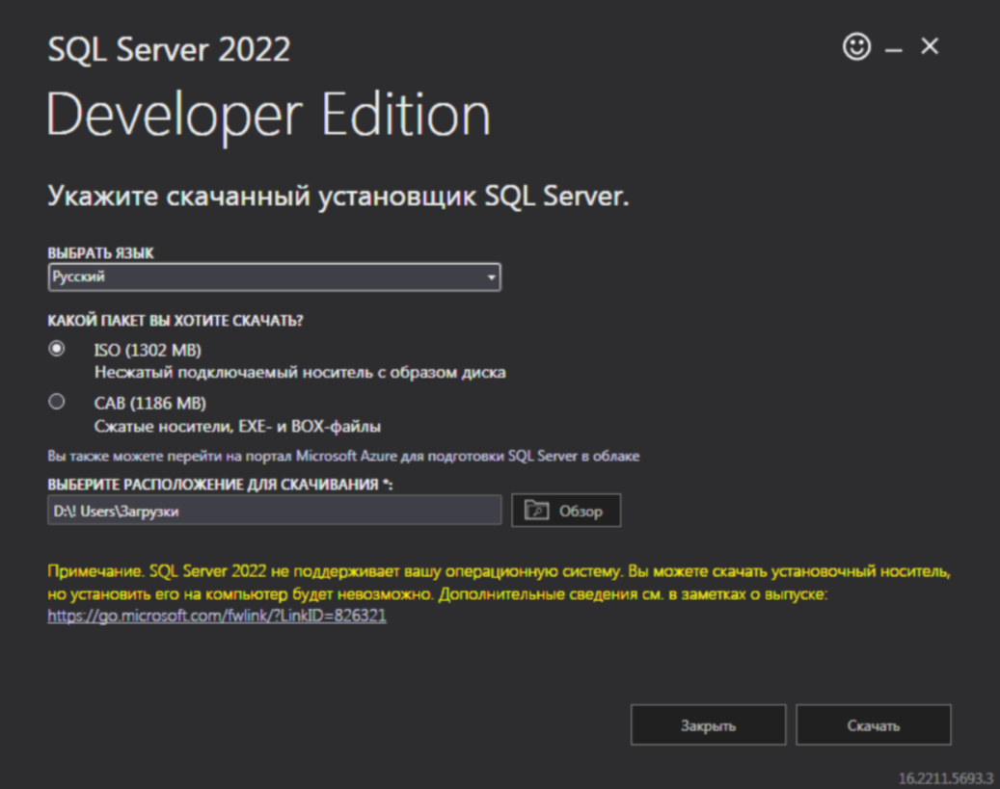
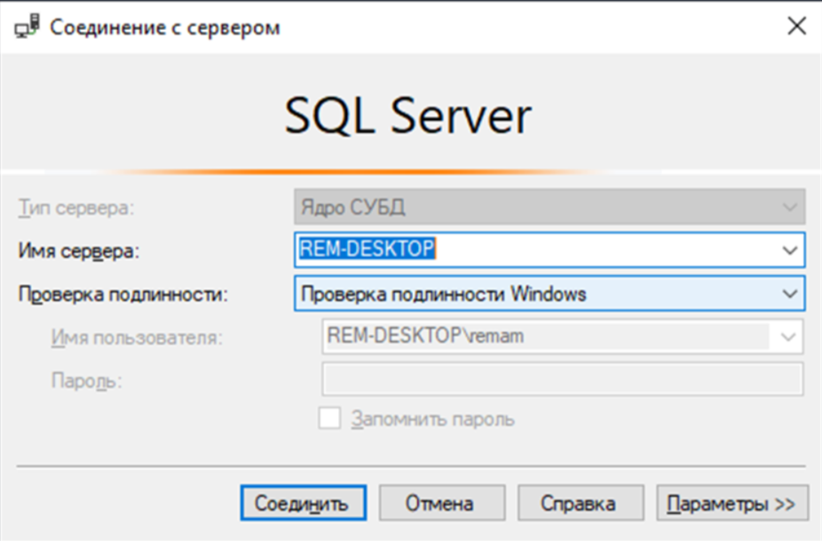
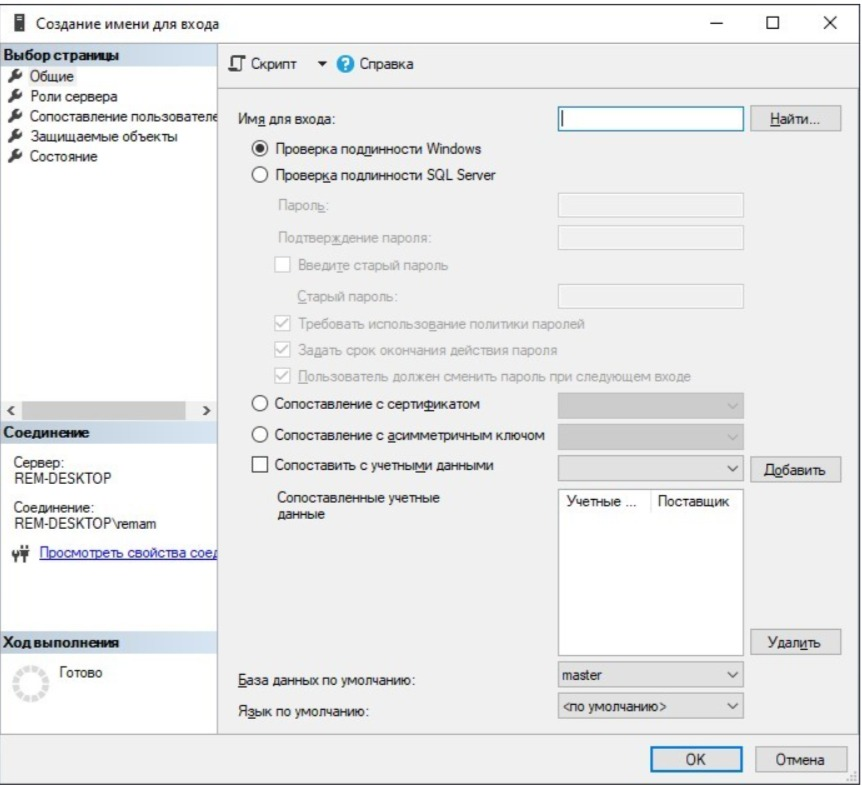
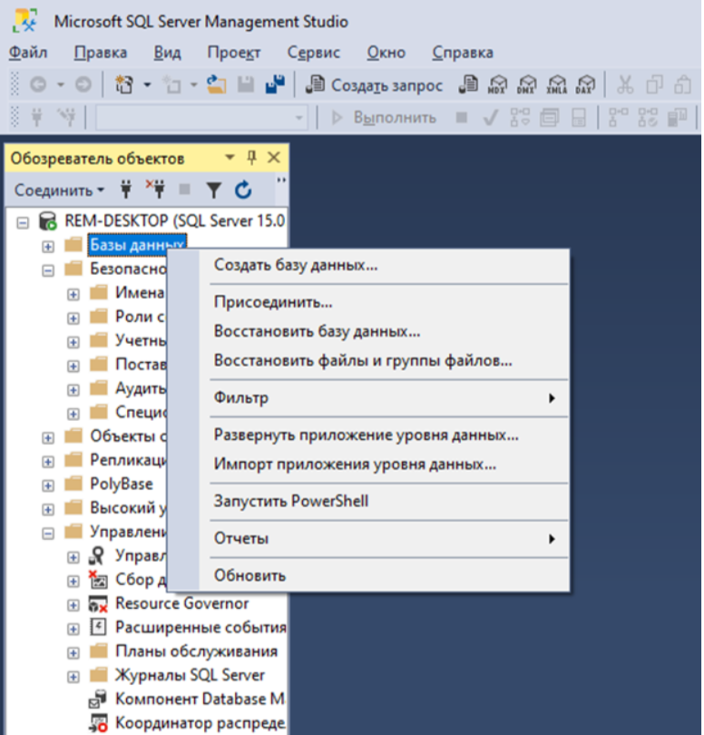
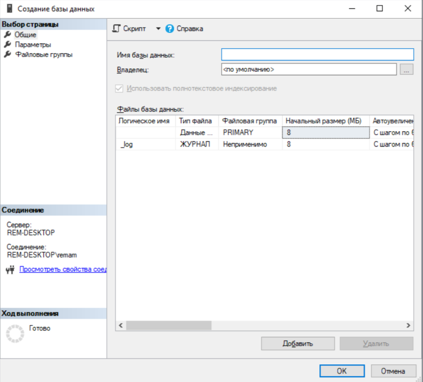
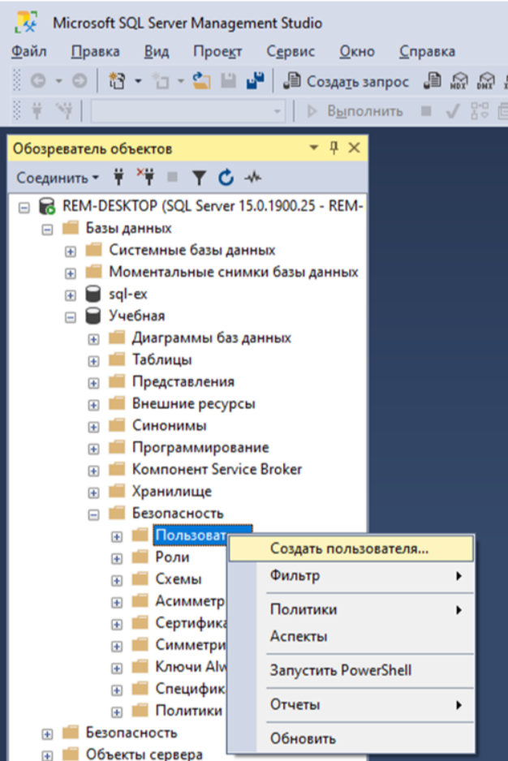
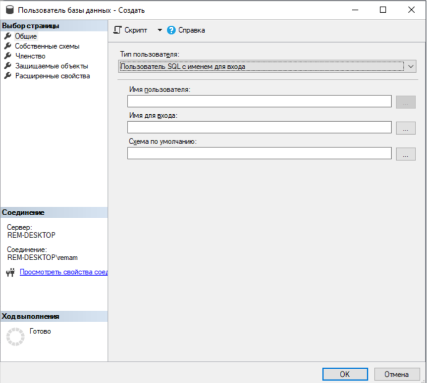
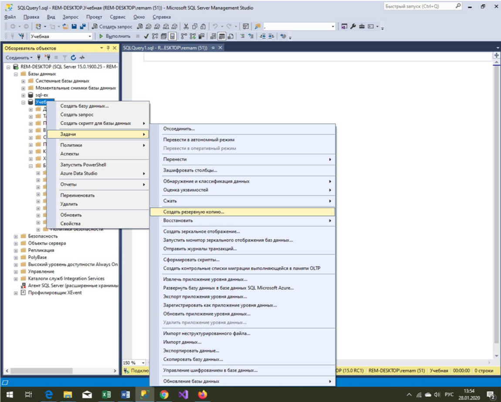
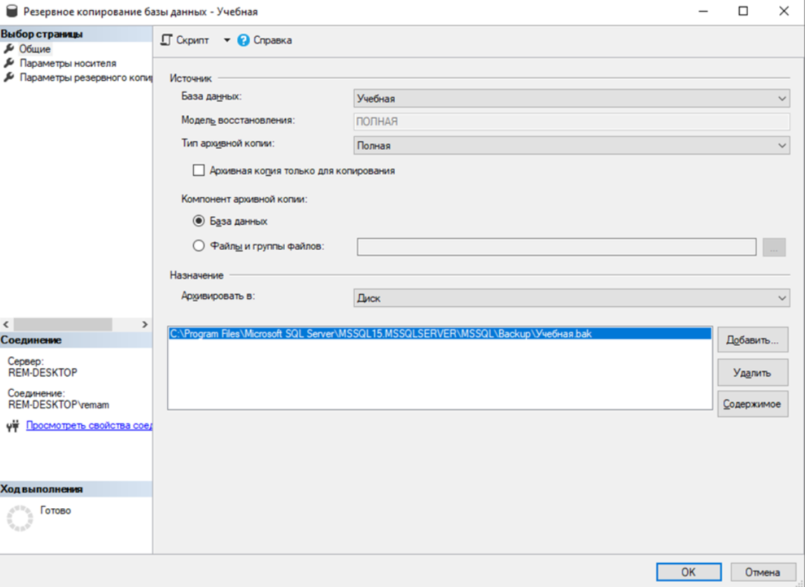
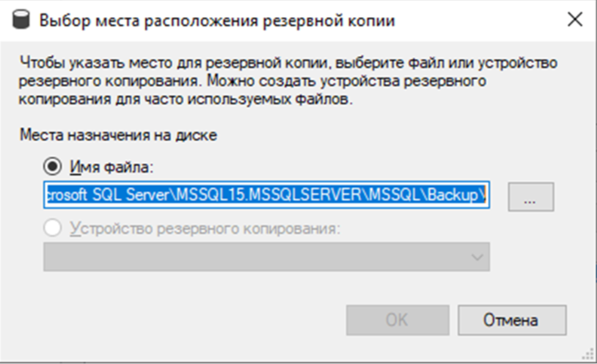

1.1. Описание программ
Управление информацией является неотъемлемой частью профессиональной деятельности, а базы данных стали жизненно важным компонентом повседневной жизни. Для поддержки баз данных необходим механизм, называемый системой управления базами данных (СУБД).
СУБД - это программное обеспечение, которое позволяет пользователям определять, создавать и поддерживать базу данных, а также контролировать доступ к ней. Microsoft SQL Server - популярная СУБД, подходящая для различных проектов, от небольших приложений до крупных высоконагруженных. Центральным аспектом MS SQL Server является база данных, которая организована в соответствии с реляционной моделью, разработанной в 1970 году. В реляционной модели данные хранятся в таблицах, где каждая строка представляет отдельный объект, а столбцы содержат его атрибуты.
Для взаимодействия с базой данных используется язык структурированных запросов (SQL). Язык SQL был впервые разработан в компании IBM и впоследствии стандартизирован ANSI. Однако поставщики СУБД часто имеют собственные реализации языка SQL и собственные процедурные языки, в частности, в Oracle Database используется PL/SQL (поддерживается также в DB2 и Timesten), в Interbase и Firebird – PSQL, в DB2 – SQL PL, в Microsoft SQL Server и Adaptive Server Enterprise – Transact-SQL, в PostgreSQL – PL/pgSQL.
1.1.1. SQL Server Developer Edition
SQL Server 2022 Developer — это бесплатный выпуск с полным набором функций, лицензируемый для использования в качестве базы данных для разработки и тестирования и не предназначенный для применения в рабочей среде.
Для установки переходим на сайт https://www.microsoft.com

Рис.1 Установка SQL Server 2022 Developer
1.1.2. SQL Server Management Studio
SQL Server Management Studio (SSMS) - это интегрированная среда для управления любой инфраструктурой SQL, от SQL Server до Azure SQL Database. SSMS предоставляет инструменты для настройки, мониторинга и администрирования экземпляров SQL Server и баз данных. Используется SSMS для развертывания, мониторинга и обновления компонентов уровня данных, используемых вашими приложениями, а также для создания запросов и сценариев.
Скачать SQL Server Management Studio (SSMS) можно с сайта: https://www.microsoft.com.
Открытие среды SQL Server Management Studio

Рис. 2. Соединение с SQL Server
MS SQL Server использует два режима аутентификации: аутентификацию Windows и аутентификацию MS SQL Server (SQL Server authentication). Для аутентификации по умолчанию используется аутентификация Windows. Windows Authentification mode (Проверка подлинности Windows) – это режим, который использует для подключения к серверу только логины Windows (рис. 2). В этом случае пользователям нет необходимости вводить какие-то пароли при подключении к SQL Server, если они уже вошли в сеть Windows.
Для использования аутентификации SQL Server вначале необходимо создать учетную запись в самом SQL Server. В отличие от логинов Windows, логины SQL Server – это самостоятельные учетные записи со своими именами и паролями, информация о которых хранится в системной базе данных SQL Server. При подключении к серверу при помощи логина SQL Server вам придется указать имя логина и пароль.
1.2. Создание учетной записи
Создайте новую учетную запись с именем STUDENT. B Management Studio список учетных записей, сконфигурированных на сервере, содержится в папке «\Безопасность\Имена для входа». Чтобы добавить новую учетную запись, необходимо выделить узел
«Имена для входа» в контекстном меню и выбрать пункт «Создать имя для входа…».
В открывшемся окне (рис. 3) в поле «Имя для входа» введите STUDENT. Далее выберите переключатель «Проверка подлинности SQL Server» и в поле «Пароль» наберите пароль. Снимите флажок «Пользователь должен сменить пароль при следующем входе». Остальные поля оставьте без изменений.

Рис. 3. Создание новой учетной записи
1.3. Создание базы данных
Базу данных может создать только пользователь с правами администратора. Выберите в контекстном меню папки «Базы данных» команду «Создать базу данных…» (рис. 4). В поле «Имя базы данных» введите имя создаваемой базы данных (БД) – «Учебная» (рис. 5). Здесь также можно изменить путь сохранения созданной БД. Обратите внимание, что создаётся пустая база данных (контейнер).

Рис. 4. Пункт контекстного меню «Создать базу данных…»

Рис. 5. Создание новой базы данных
После создания БД окно «Обозреватель объектов» обновится. В ветке «Базы данных» появится новая база данных «Учебная». Эта база данных принадлежит пользователю по имени sysadmin (системный администратор).
1.3.1. Создание нового пользователя
Создание пользователя в SQL Server осуществляется посредством создания учетной записи. Пользователи БД – это специальные объекты, которые создаются на уровне базы данных и используются для предоставления разрешений в базе данных (на таблицы, представления, хранимые процедуры). Логины и пользователи БД – это совершенно разные объекты.
Чтобы добавить в базу данных «Учебная» нового пользователя, надо:

Рис. 6. Пункт контекстного меню «Создать пользователя...»

Рис. 7. Добавление в БД нового пользователя
Таким образом, на основе учетной записи Student будет создан новый пользователь для БД «Учебная» с правами владельца этой базы данных.
1.3.3. Резервное копирование БД
Сведения, хранящиеся в базах данных, являются стратегической ценностью любой компании, поэтому их сохранность очень важна.

Рис. 8. Пункт контекстного меню «Создать резервное копию…»

Рис. 10. Диалоговое окно Back Up Database

Рис. 11. Диалоговое окно «Выбор места расположения…»
1.4. Заданий